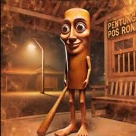

I am Tung Tung Tung Sahur, and this is the reason why I killed Bombardilo Crocodilo. He flew over my homeland, the Forestini Forest, and dropped bombs. Not out of necessity, for fun. The explosions destroyed everything. Even my son, Baby Tung. In that moment, the peaceful part of me died. I swore revenge. For six months I trained, alone, wounded, full of hatred. I became stronger, faster, merciless. Then I found him, Bombardilo Crocodilo. We fought. The air burned. And I finished what he had started. But that wasn't the end. His brother, Bomboghini Goosini, waited for his return for days. But he never came. When he found his body in the desert, he knew I had killed him. He hunted me across the entire world. And eventually, he found me. Right where I had killed his brother. And there, he killed me. Or so he thought. Because when he returned to the place of our battle, I was gone. And in the smoke, a message lay, I'm still alive. The war isn't over. It's just begun. I will conquer the world.
pizza